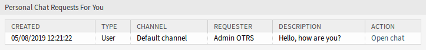
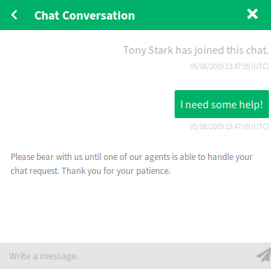
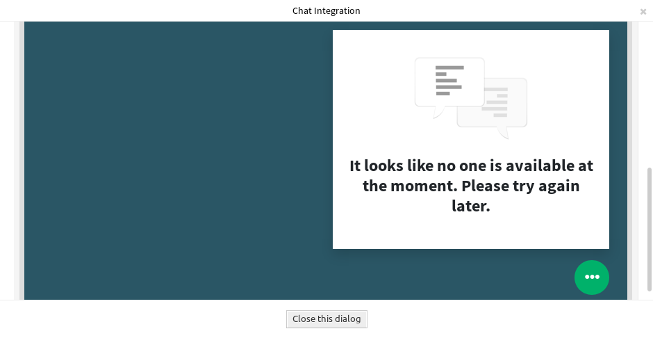

聊天管理¶
参见
需要激活系统配置 ChatEngine::Active 才能使用此功能。
聊天管理屏幕是聊天功能的中心点。在这里，服务人员可以管理聊天以及查看和接受打开的请求。此屏幕提供来自客户用户、公共用户和其他服务人员的聊天请求列表，以及所有活动聊天的概览。
使用此菜单项管理聊天。聊天管理屏幕在 聊天 菜单中可用。

聊天管理 屏幕
每个聊天频道都可以通过小部件顶部的选项进行筛选，列出 所有聊天频道 或仅在 个人偏好设置 中设置的 我的聊天频道 。
开始新的聊天¶
聊天参与者可以是服务人员、客户用户或公共用户。
服务人员到服务人员¶
若要开始与另一个服务人员聊天：
在仪表板中使用 已登录用户 小部件。能够聊天的服务人员在其名称旁边会有一个聊天图标。

可用的服务人员
单击服务人员名称旁边的聊天图标。
输入第一条消息到 开始聊天 对话框并发送该消息。

开始聊天对话框
将聊天请求发送给其他服务人员后，在聊天管理屏幕中查看该聊天。将显示一个浏览器通知，通知该服务人员。

我的活动聊天 小部件
等待答复。另一个服务人员必须接受带有 打开聊天 链接的聊天请求。
你的个人聊天请求 小部件
当其他服务人员接受聊天请求时，您现在就可以聊天了。

服务人员到服务人员的聊天
服务人员到客户用户¶
若要开始与一个客户用户聊天：
在仪表板中使用 已登录用户 小部件。能够使用聊天功能的客户用户的名字旁边会有一个聊天图标。

可用的客户用户
参见
客户用户也可以在 客户用户信息中心 或 工单详情 屏幕的 客户信息 小部件中选择。
单击客户用户名称旁边的聊天图标。
输入第一条消息到 开始聊天 对话框并发送该消息。
开始聊天对话框
将聊天请求发送给其他服务人员后，在聊天管理屏幕中查看该聊天。将显示一个浏览器通知，通知该服务人员。

我的活动聊天 小部件
等待答复。客户用户必须接受显示在外部人员界面右下角的聊天请求。

外部人员界面中的聊天请求
当客户用户接受聊天请求时，您现在就可以聊天了。

服务人员到客户用户的聊天
当客户用户关闭聊天时，可以通过电子邮件发送该聊天或从该对话中创建一个工单。

在外部人员界面中保存对话
客户用户到服务人员¶
客户用户不能直接与某个服务人员开始聊天，只能创建一般的聊天请求。
若要接受来自一个客户用户的聊天请求：
客户用户单击外部人员界面右下角聊天窗口中的 新建对话 按钮。
开始聊天窗口
将显示一个浏览器通知，通知服务人员。转到聊天管理屏幕，通过 打开聊天 链接打开一般聊天请求。

由客户发起的一般聊天请求
接受该聊天请求。

聊天预览对话框
当服务人员接受聊天请求后，他们就可以聊天了。

客户用户到服务人员的聊天
公共用户到服务人员¶
外部人员界面的访客也不能直接与某个服务人员开始开始聊天，而只能创建一般的聊天请求。由于没有登录，他们需要添加一个名称来开始聊天。
开始聊天窗口
与 客户用户到服务人员 小节中描述的步骤相同，但是聊天请求显示在 General chat Requests From Public Users 小部件中。

由访客发起的一般聊天请求 小部件
聊天 小部件¶
聊天小部件是与他人聊天时的主要组件。它提供了聊天中所有消息的历史记录，并根据您的权限级别提供了可用的操作列表。
通过单击文本框旁边的发送图标或按回车键，可以使用 我的活动聊天 小部件中的聊天文本框发送消息。可用 Shift + Enter 在消息中插入新行。
在聊天小部件顶部，每个聊天参与者的名字前面都有一个彩色圆圈图标，它表示参与者的可用性。
- 绿色： 参与者处于活动状态(可用的和在线的)。
- 黄色： 参与者不在(可用，但在
ChatEngine::AgentOnlineThreshold中设置的时间段内此用户没有向服务器发送请求)。 - 粉红色： 参与者处于非活动状态(聊天请求尚未被接受或参与者离开聊天)。
- 红色： 参与者不可用(通过可用性按钮设置)。
- 黑色： 参与者已退出或会话已过期。
聊天小部件的右上角有一些图标。

聊天菜单
第一个三角形图标展开并折叠聊天菜单。该菜单有几个菜单项。
- 电话工单
- 允许您创建一个电话工单，将当前聊天附加到其中作为信件。创建成功后，聊天将自动关闭。
- 追加
- 允许您将此聊天作为信件附加到所选工单。 信件创建完成后，聊天会自动关闭。
- 邀请
- 允许您邀请其他服务人员参与此聊天。您可以从要邀请的可用服务人员列表中选择。一旦服务人员发出邀请，将向该服务人员发送一个新的服务人员到服务人员的聊天请求。当请求被接受后，您和被邀请的服务人员之间将建立一个新的内部聊天。在这个内部聊天中，被邀请的服务人员在高级操作工具栏中还有两个操作可用：观察者 和 参与者。
- 更改频道
- 使用此链接，您可以更改此聊天的频道。 对于目标频道的选择，适用于初始选择聊天频道相同的规则。
- 下载
- 让您以PDF格式下载此聊天的完整历史记录。
- 新窗口
- 在单独的弹出窗口中打开此聊天。 您可以以与聊天小部件相同的方式使用此窗口，还可以同时使用窗口小部件和弹出窗口。
- 观察者
当您被其他服务人员邀请到一个聊天时，您可以根据您的权限级别决定是否以观察者或参与者的身份加入聊天。一旦您从工具栏中单击该操作，一个新的聊天小部件（就是您被邀请进行的聊天）将添加到您的活动聊天列表中。
如果您以观察者的身份加入聊天，您将只能查看其他人对聊天的参与情况，并且您将对客户用户或公共用户不可见。服务人员仍然会收到一条消息，表明您以观察员身份加入了该聊天。
作为一个观察者，您可以随时通过使用聊天小部件中的高级操作工具栏成为参与者，这取决于您的权限级别。
- 参与者
- 如果你想在被邀请的聊天中有所贡献，你可以作为参与者加入。客户用户、公共用户和服务人员将收到一条消息，表明您已经进入了该聊天。作为参与者，您可以通过使用聊天小部件中的高级操作工具栏随时成为观察者。
第二个圆圈图标允许服务人员为这个聊天设置一个个人监控，这是一个三态开关：
- 空圆圈：没有监视。
- 带有勾号图标的空圆圈：只监视客户用户活动。
- 带有勾号图标的满圆圈：监视所有操作。
在监视聊天时，每次聊天中出现新操作时，浏览器都会显示通知。
最后，第三个关闭图标可以通过单击 X 关闭聊天。
聊天集成¶
使用聊天集成配置和代码片段生成器，可以轻松地将公共聊天集成到一个网站中。
若要配置聊天并生成代码片段：
单击左侧边栏中的 配置聊天集成 按钮。
自定义 配置 选项卡中的文本。

聊天集成 - 配置
注解
在 配置 选项卡中所做的所有更改将不会保存。每次打开此对话框时，所有字段都将重置为默认值。
从 集成代码 选项卡复制代码片段，并将其粘贴到您网站的
</body>元素之前。
聊天集成 - 集成代码
您可以在 预览 选项卡中检查结果。
聊天集成 - 预览
注解
预览版使用了真正的聊天模块。必须设置其他服务人员可用于聊天才能预览所有功能。
如果浏览器控制台显示混合内容警告，管理员必须检查系统配置设置 HttpType 是否正确设置。网站必须运行在相同的协议上，才能让聊天小部件正常工作。
例如，如果网站在 SSL 上运行 OTRS，系统配置选项必须设置为 https。